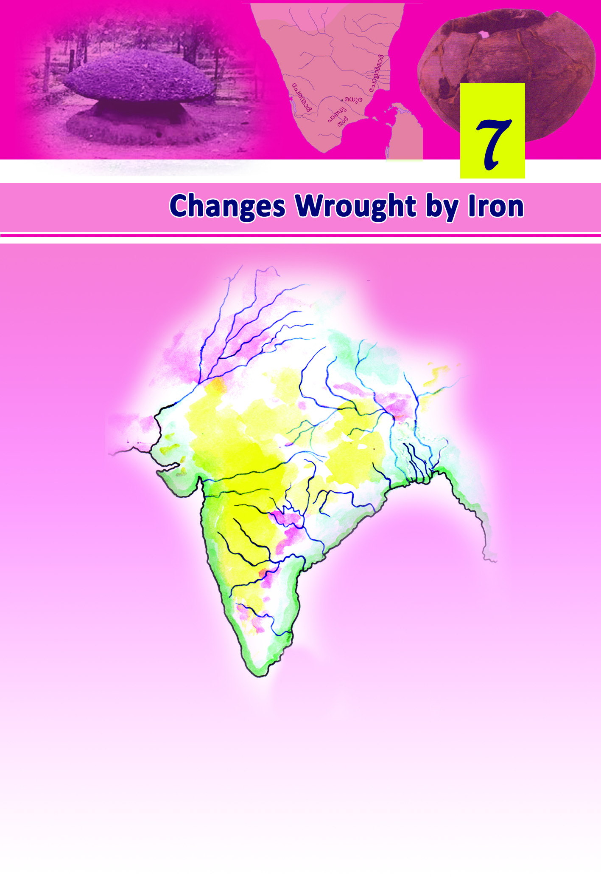
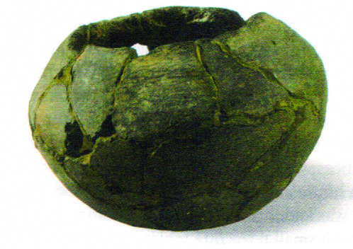
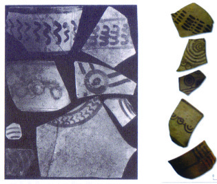
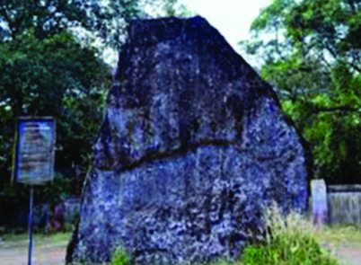
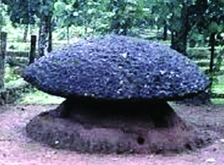
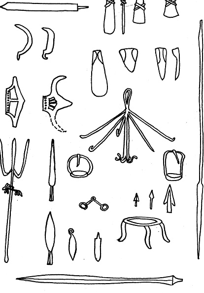
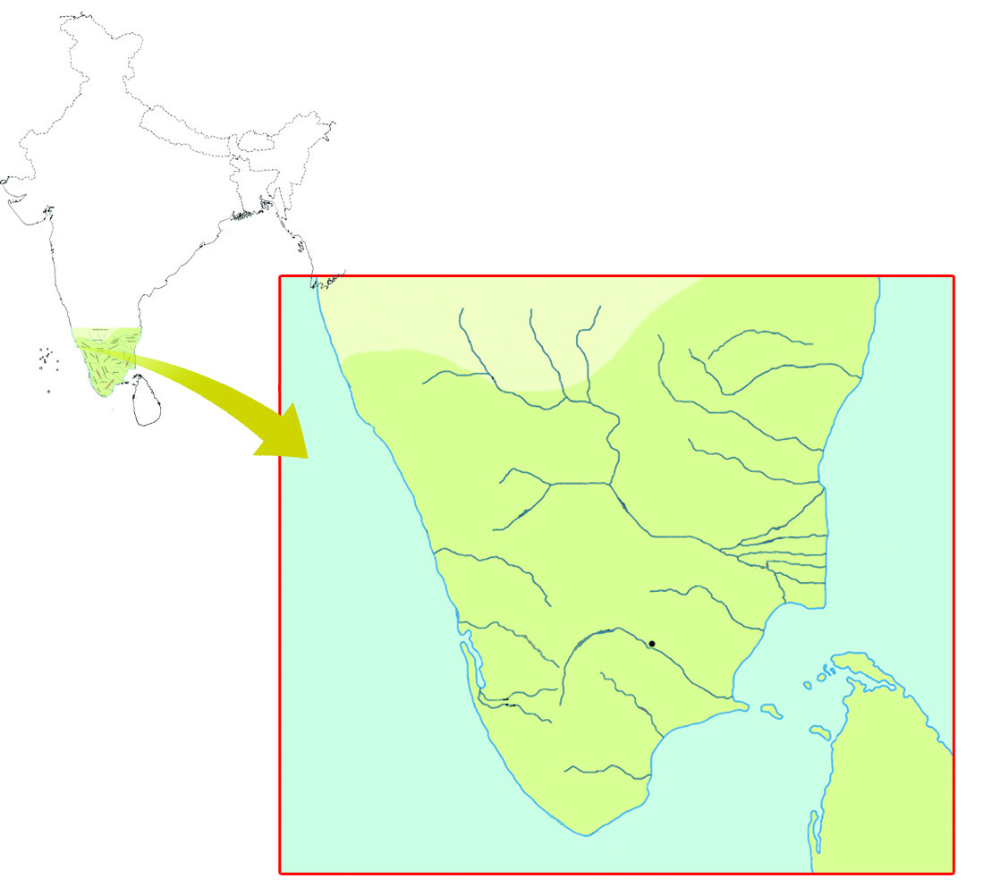

8787
87
Changes Wrought by Iron
Which are the rivers marked in the given map?
• Indus
•
•
•
•
•
•
Indus
JhelumChenab
Ravi
Sutlej
Beas
Ganga
Figure 7.1
Page 7

Page 8
8888
88
Social Science V
Which among them flow through the north west region of
India? They are the River Indus and its tributaries. The
Harappan civilization that we discussed earlier had flourished
along these river basins. Around 3500 years ago, a group of
people, namely Aryans, migrated to this region. The Vedas
provide us information about them. The Vedas are composed
in Sanskrit language. In the earlier period the Vedas were
passed orally from generation to generation. The period during
which the human life as depicted in the Vedas existed, is
known as the Vedic Period.
Look at the following chart that sheds light on the Vedic Period.
What information do you obtain from the chart?
•
The period between 1500 BC and 600 BC is known as the
Vedic Period
•
Rig Veda is the earliest among the Vedas
•
The period of human life described in the Rig Veda is
known as the Rig Vedic Period
•
•
•
Cattle, the measure of wealth
Let us see the observation made by the famous historian
A L Basham on the Aryan social life during the Rig Vedic
Period.
"The farmers prayed for the increase of cattle, the warriors expected
cattle as booty and the sacrificial priest was rewarded with cattle for
his service."
Vedic Period
1500 - 600 BC
Later Vedic Period
1000 - 600 BC
Rig Vedic Period
1500 - 1000 BC
Rig Veda
Sama Veda
Atharva Veda
Yajur Veda
Page 9


8989
89
Changes Wrought by Iron
Grey ware
What could be the reason for giving such importance to cattle
during that period?
During the Rig Vedic Period cattle were considered to be the
most important form of wealth. The main occupation was cattle
rearing. People were also engaged in agriculture. The main
crop was barley. The groups of Aryans who reared cattle were
known as tribes. The chieftain of each tribe was known as
'Rajan'. The tribes fought each other for the possession of cattle.
There were battles among different Aryan tribes as well as
between the Aryans and the Non-Aryans. The Aryans
possessed horses and weapons made of copper and bronze.
With the advantage of these, they conquered the Non- Aryans.
The subjugated people were known as Dasas or Dasyus. Aryans
captured the cattle of the defeated Non-Aryans.
Compare the social life of the Rig Vedic Period with
that of the Harappa, based on the following indicators:
• Occupations
• Tools
During the Rig Vedic Period
people worshipped the gods
such as Indra, Varuna, and
Agni; and goddesses such as
Atithi and Ushas. The pottery
used in this period was grey
in colour and was known as
'Grey ware'.
The given picture is of the
remnant of a Grey ware used
in the Rig Vedic Period.
Towards the Gangetic Plain
Later Vedic Period is the period during which human life as
depicted in the Sama, Yajur, and the Atharva Vedas existed.
The Aryans, who had been cattle-rearers in the Rig Vedic
Period, reached the gangetic plain in the Later Vedic Period.
The gangetic valley is the area surrounding river Ganga.
Conflict between tribes, emergence of new tribes, and growth
in population were the main reasons for their migration to the
gangetic plain.
JT-509/2/ Social Sci. - 5 (E), Vol-2
Page 10


9090
90
Social Science V
Locate the gangetic plain on the map (Fig.7.1) and identify the
present states across which the gangetic plain stretches.
Let us examine the features of the gangetic plain.
-
Dense forests
-
Fertile alluvial soil
-
Plenty of rain
Which metals were used by the Aryans to make tools and
weapons when they migrated to the gangetic plain?
It was very difficult for them to clear the trees and till the hard
soil using their tools made of copper and bronze. So they set
fire to jungles for clearing the area. However, the stumps of
the burnt trees hindered their way forward. It was necessary
for them to have a harder metal to make more effective tools
and implements and this led to the invention of iron.
Which is the metal we use to make the tools used for
felling trees and ploughing land?
How is iron different from copper and bronze?
The gangentic plain was rich in iron ore deposit. With the
invention of iron, the people of the gangetic plain made harder
weapons and implements, with which they could easily clear
the jungles. They used iron ploughs for tilling hard soil.
Agriculture became the prime occupation. This period in which
iron implements were used is known as the Iron Age.
How far were the conditions in the gangetic plain favourable
for agriculture? Write down your opinion.
Let us see the major impacts of the shift from cattle rearing to
agriculture.
-
Beginning of settled life
-
Increase in agricultural production
-
Exchange of surplus products
Discuss the changes in human life brought about by the the
invention of iron and iron implements along the gangetic plain.
Page 11

9191
91
Changes Wrought by Iron
Prepare a brief note based on your discussion.
The earthenware used by the people of Later Vedic Period is
known as 'painted grey ware'.
The remnants of a few such pots
are seen in the picture.
When people began to lead a
settled life, some changes were
brought about in their social life.
The society got divided into four
based on occupations: the
Brahmins, the Kshatriyas, the
Vaishyas and the Sudras. This
stratification is known as chaturvarnya.
Can you name the gods and goddesses worshipped in the Rig
Vedic Period?
In the Later Vedic Period, this mode of worship lost its
importance and instead yagas became important. Most of the
yagas involved animal sacrifice on a large scale.
Some features of the Rig Vedic and Later Vedic Periods are
given below. Read them carefully and write down the relevant
period in the space provided.
Stones do have a story to tell...
Remnants of painted grey ware
Features
Rig Vedic/
Later Vedic Period
Agriculture became the chief occupation
Yagas became prevalent
Iron tools and implements were used
Cattle rearing was the main occupation
Began settled life
Gods like Indra and Varuna were worshipped
Painted grey wares were used
Let us now discuss the human life in Tamilakam during the
Iron Age. Kerala was a part of Tamilakam during that period.
In the ancient period South Indian regions were generally
known as Tamilakam.
Page 12



9292
92
Social Science V
Kudakallu
Nattukallu
The iron implements of the Megalithic Age
These are 'megaliths', big stones of different shapes, placed
over graves in ancient Tamilakam. Remnants of iron tools and
implements, earthenware, grains, and other objects used during
that period have been found in such graves. These megaliths
are evidences of the human life in ancient Tamilakam. Hence
the period is known as the Megalithic Age.
Observe the picture given below. These are the tools and
weapons used during the Megalithic Age. All of them were
made of iron.
Look at the pictures given below.
Page 13



9393
93
Changes Wrought by Iron
Cheras
Pandyas
Cholas
Madurai
South India in the Sangham Age
The major sources on the life of people in ancient Tamilakam
are the megaliths and the pazhamthamizhpattukal (ancient Tamil
songs). The latter are also known as 'Sangham Literature'.
Do you know why these songs are known as 'Sangham
Literature'? The Pandyas who ruled the ancient Tamilakam with
Madurai as their capital, patronized an assembly of poets
known as Sangham. The important works included in the
Sangham literature are Pathupattu, Patittupattu, Akananuru, and
Purananuru.
The ancient Tamilakam was ruled by the dynasties called the
Cheras, the Cholas, and the Pandyas, collectively known as
Moovendars.
In the map given below, the regions where the Cheras, the
Cholas and the Pandyas ruled are marked. Can you identify
the dynasty which ruled the region that includes the present
Kerala?
Why is the Iron Age of ancient Tamilakam known as
the Megalithic Age? How does the Megalithic Age
differ from the Stone Age?
Page 14
9494
94
Social Science V
Through the Pazhamthamizhpattu
The Sangham literature (the ancient Tamil literature) tells us
that the ancient Tamilakam was classified into five geographical
regions. They were known as Tinais. Each Tinai had its own
geographical features. Let us have a look at these.
Have you heard of places like Mullassery, Maruthur, and
Palakkad?
These names have been formed with relation to a specific
Tinai. Now go through the list of Tinais and try to relate these
names to the respective Tinai.
Find out the names of places related to Tinais and prepare a
list of them.
Pepper was abundantly cultivated in the Kurinchi region during
this period. The foreign traders came to the coastal towns of
South India in search of pepper. The features of this age are
depicted in the literary works of the period.
Read the follwing verses from Purananuru, one of the Sangham
works.
Tinai
Geographical features
Kurinchi
Hilly zones
Mullai
Jungles and grasslands
Palai
Dry land
Marutam
Agricultural fields
Neytal
Coastal zones
ao≥ hn‰v ]Icw t\Snb s\¬°q-ºmcw sIm≠v
hoSpw Db¿∂ tXmWn-Ifpw
Xncn-®-dn-bm≥ ]mSn√m-Xm-bn.
A{]-Imcw Iq´n-bn-´n-cn-°p∂ apf-Ip-Nm-°p-Iƒ
i_vZm-b-am-\-amb Ic-bn¬\n∂pw
th¿Xn-cn-®-dn-bm≥ Ign-bmsX
hnj-an°pw ImWp∂ Bfp-Iƒ
I∏-ep-Iƒ sIm≠p-h∂ kz¿Æw
The heap of rice obtained by selling fish
Made difficult to discern
The house and huge boats.
The confused folk struggle to part
The stacked pepper sacks
From noisy land
Page 15


9595
95
Changes Wrought by Iron
What information do you get from the song?
•
Goods were exchanged in the Tinais
•
Trade of pepper flourished
•
Lumps of gold were received in return
•
There were overseas trade relations
•
Traders came in search of other goods besides pepper
Find out and add more information.
Discuss the major changes that human life underwent
as it evolved through the Bronze Age to the Iron Age.
Summary
•
The period from 1500 BC to 600 BC is known as the Vedic
Period.
•
The Vedic Period is divided into the Rig Vedic Period and
the Later Vedic Period.
•
The human life of these two periods was different in many
ways.
•
The use of iron became widespread in India during the
Later Vedic Period and hence this period is known as the
Iron Age.
•
The Iron Age of the ancient Tamilakam is known as the
Megalithic Age.
•
Tinais with different geographical characteristics were an
important feature of ancient Tamilakam.
The gold brought by ships
Bourne inland by boats
The gifts from land and hill
Exchanged with traders from afar.
(Unpublished translation)
tXmWn-Iƒhgn- I-c-bn-se-Øp-∂p.
ae-bn¬\n∂v In´p∂ hn`-h-ßfpw
Ic-bn¬\n∂v In´p∂ hn`-h-ßfpw
tN¿Øv A¿∞n-Iƒ°v sImSp-°p-∂p.
Page 16


9696
96
Social Science V
Significant learning outcomes
The learner can:
•
describe the Vedic Period.
•
compare the human life of the Vedic Period with that of
the Harappan civilization.
•
identify the features of human life during the Later Vedic
Period and differentiate it from that of the Rig Vedic Period.
•
describe the peculiarities of the Megalithic Period.
•
list out the peculiarities of the Tinais.
•
Compare and contrast the social life of the Rig Vedic Period
with that of the Later Vedic Period
•
List out the the major Sangham works
•
Match the items in Column A with that of Column B in the
given table.
A
B
Kurinchi
Dry land
Mullai
Agricultural land
Neytal
Hilly zone
Palai
Grassland
Marutam
Coastal area
•
The invention of iron and use of iron implements was an
important milestone in the human history. Justify.
Let us assess
Extended activities
•
Collect the pictures of Megalithic monuments and prepare
an album with proper description.